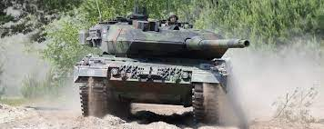
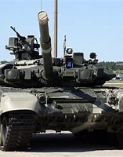
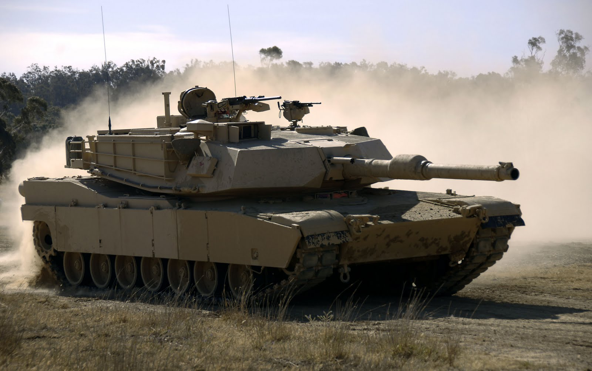

Moderne Tanks!
Startside

Pros and cons: Leopard 2A7
Pros:
- God Rustning på øvre del av stridsvognen
- God Kannon + God Ammunisjon
- Ganske Rask
Cons:
- Dårlig front og side beskyttelse mot moderne ammunisjoner
- Stor ammunisjons lagring på baksiden av the turret

Pros and cons: T90 MBT (Main Battle Tank)
Pros:
- God Kannon + God Ammunisjon
- Veldig Rask
Cons:
- Rask topfart ofrer rustning
- Autolastnings Mekanismen er bevist til å være upraktisk og farlig

Pros and cons: Abrams
Pros:
- Ganske bra Rustning
- God Kannon + God Ammunisjon
- Ganske Rask
Cons:
- Turret Ring er veldig svak
- Veldig stor